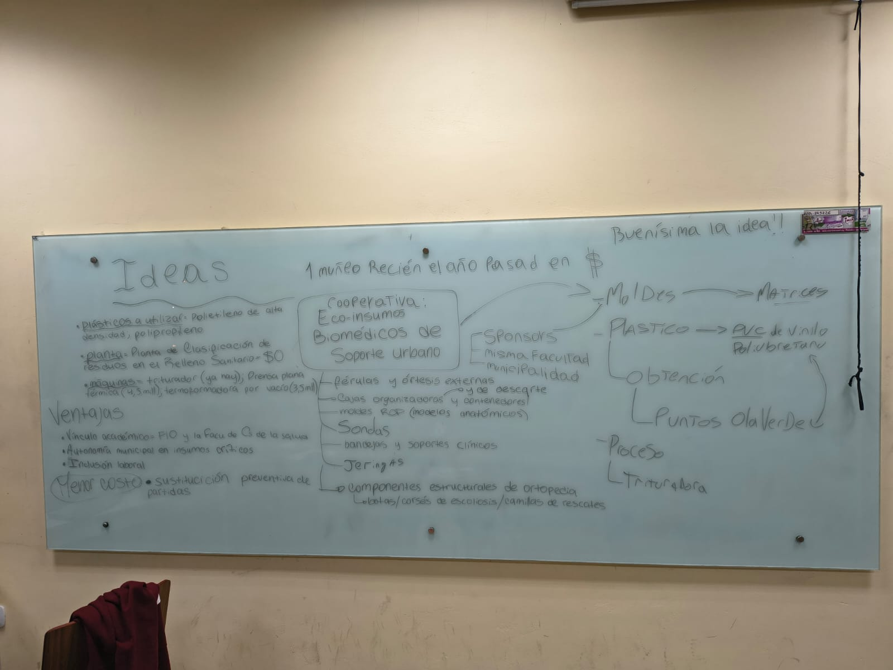

Polietileno de alta densidad y polipropileno para garantizar resistencia y reutilización.
Crear férulas, soportes clínicos, bandejas médicas, ortopedia y modelos anatómicos.
Eco-insumos Biomédicos de soporte urbano junto a GIRO.
Recolección de plásticos desde puntos verdes y reciclado urbano.
Los residuos son triturados y preparados para moldeado.
Uso de moldes especiales para productos biomédicos.
Fabricación de piezas resistentes y reutilizables.
Participación de trabajadores y cooperativas locales.
Sustitución preventiva de insumos con materiales reciclados.
Reducción de residuos y menor contaminación urbana.
Kg reciclados
Modelos producidos
Puntos verdes